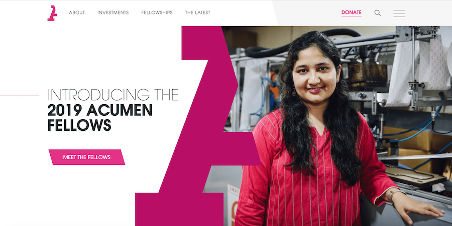
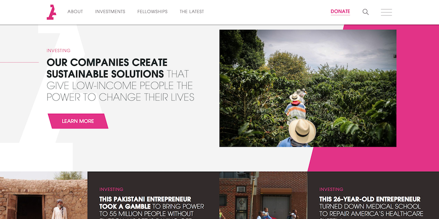

TEACHFORAMERICA | www.teachforamerica.org
Teach For America website , like Imagining America, is a community that brings people from different backgrounds to work for a common objective. TEACHFORAMERICA is an organization that is looking to eradicate educational inequity in our country by sending teachers to areas where children do not have access to a good education quality. The program last 2 years. Teach For America goal’s is to bring excellent education to children of our nation. The targeted audience of this website is young professionals that are looking for opportunities to contribute to their community.
This website complements the clear message that this organization is looking to promote, quality education. This website is easy to navigate and has a dynamic/organized interface which allows the user to have a joyful experience. I appreciate its simple color scheme that transmit professionalism and youthfulness; which is consistent throughout the entire page. Also, this website does not have overwhelming text like Imagining America does, which makes it easy to read. Because it has less wording, it’s faster than [IA] website.
Teach For America combines images and text in each section of its page, it is color coded to separate each section of the home page which is cleaver design choice. The website has an interesting navigation bar; it is fixed and sticks to the top as the user scrolls down. The Imagining America current website also has a fixed navigation bar, but it does not display the options on it, it only shows the logo and the menu icon on the right side. I would be nice to consider the different options that could be implemented in that space.
Oh! but what I enjoy the most is the fact that this website is responsive which means that it could be browse in different devices. Something to consider when re-designing Imagining America’s new website.
 Acumen | www.acumen.org
Acumen, is an organization that aims to help poor people in developing countries by giving them the same opportunities that any individual would have in this country. They are looking to bridge the gap between poor and rich. This organization has been helping communities around the world by providing basic needs and services to people that needs it the most.
Acumen might not have many things in common with Imagining America, but one thing they share is that they both are a community that is seeking to empower people from all walks of life. This website is targeted to companies/business, middle and upper-class people that can invest in this organization.
Although this website sounds professional and serious, it is friendly. It has a beautiful interface because uses micro-interactions and screen transformations which give the website a character; to make it look like it is alive. Acumen only has one color which is pink, and this color is used throughout the entire page. Giving it a clean consistency mainly because the color pink is used to accentuate different sections of the website such as text, buttons and selections. I also appreciate how the logo is used to separate the home page image and the text, which I consider a beautiful design.
Similar to Teach For America and Imagining America, this website has a horizontal navigation bar that sticks to the top to help the user access faster to the information. Acumen is minimal, elegant, and user friendly. This website fulfills all the requirements and needs that a website should have, an effective interface.